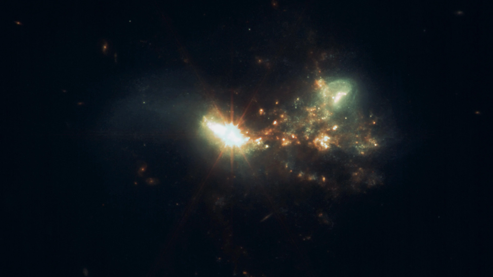
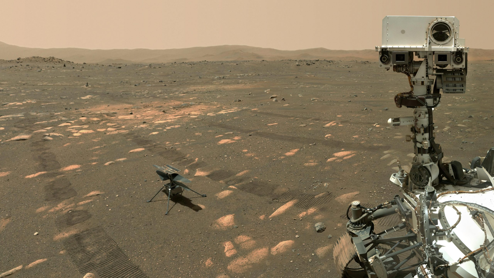

Nasa
@Nasa · 12h
I found a black hole! Want to jump in?
5K
2M
3M
James Webb Space Telescope
@JWST · 5 min
Look what I just captured! Two galaxies colliding :D

15M
22M
77M

Perseverance Rover
@MarsRover · Jul 30
A selfie sent by Perseverance with their little friend Ingenuity.

609K
32M
77M
Moon
@Moon · Jul 6
A time-lapse of an Eclipse!
2:15
999K
7M
60M

Hubble
@Hubble · 11h
Looking into the void is the best job ever.
1:11
9K
1M
1.1M